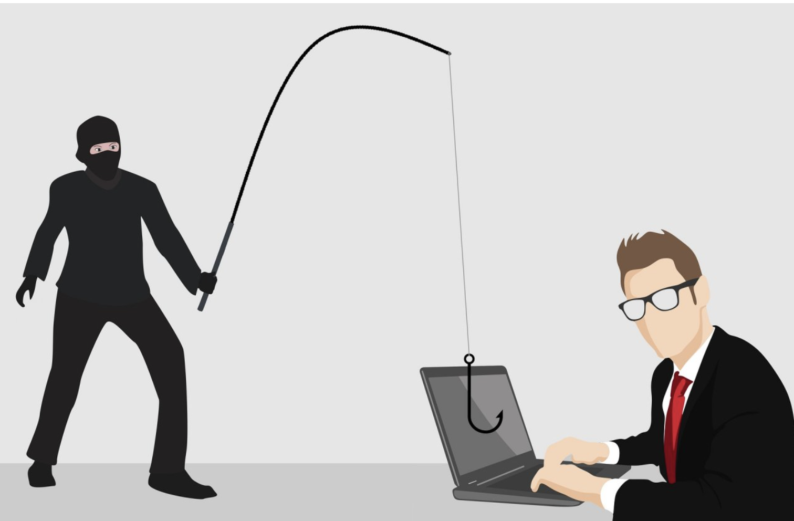

不要把電話號碼告訴別人！
在這個資訊發達、科技迅速進步的時代，電話詐騙成為台灣社會不可忽視的犯罪問題。根據警政署資料，電話詐騙案件層出不窮，受害人從年輕學生到長者無一倖免。這些詐騙集團多以假冒政府機關、銀行或熟人名義，誘使民眾匯款、提供個資，造成財產損失與心理創傷。
電話詐騙的危害性
經濟損失巨大：單一案件往往涉及鉅額匯款，對受害者造成沉重打擊。
心理創傷：受害者常因被騙而感到羞愧、恐懼，甚至影響日常生活。
社會信任危機：詐騙事件頻繁發生，讓民眾對社會信任度下降，影響人際關係。
法律問題：受害者在匯款後，往往無法追回損失，甚至可能涉及法律責任。
對家庭的影響：受害者的家庭關係可能因詐騙事件而緊張，甚至導致家庭破裂。
常見的詐騙手法
1.假冒檢警或法院，謊稱涉及洗錢或案件需凍結帳戶。
2.假借親友名義，聲稱遭遇意外或急需用錢。
3.偽裝銀行或電信公司，要求操作ATM或點擊釣魚連結。
4.投資詐騙、交友詐騙，透過情感或高報酬吸引轉帳。
怎麼從小地方做起
提高警覺，主動查證
不輕信、不透露、不操作
主動關心親友
善用政府資源
社群平台推廣防詐觀念

請勿利用Google表單送出密碼